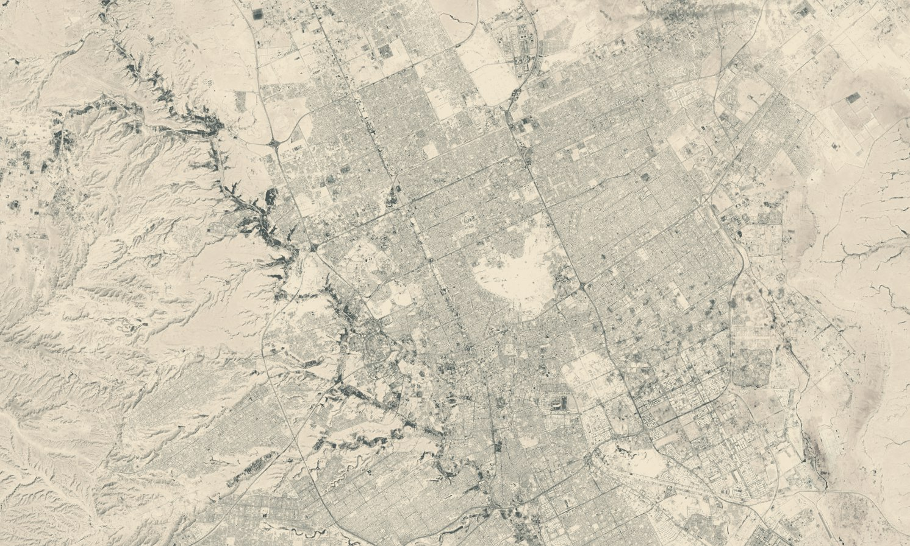
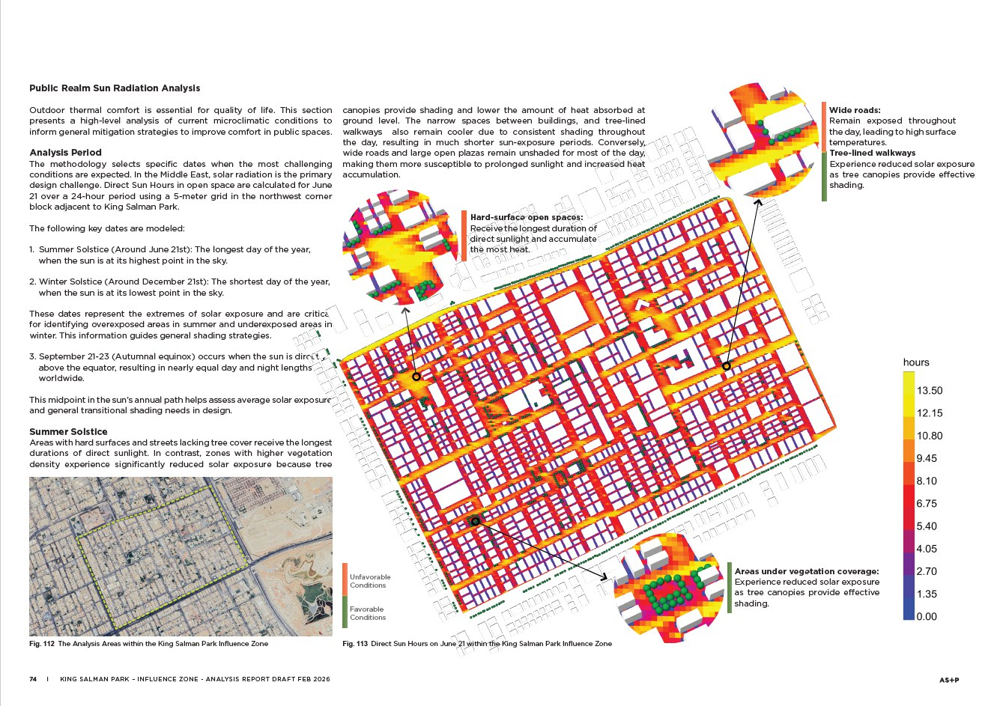
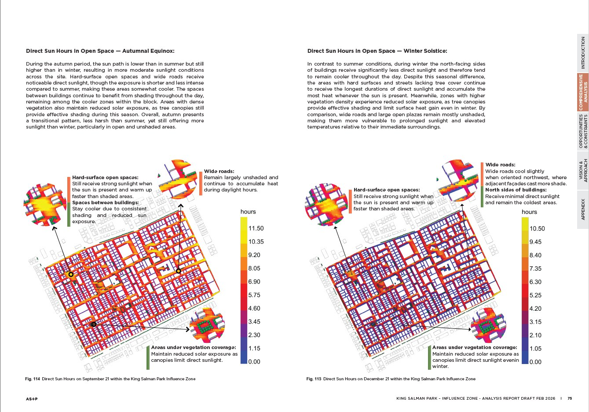
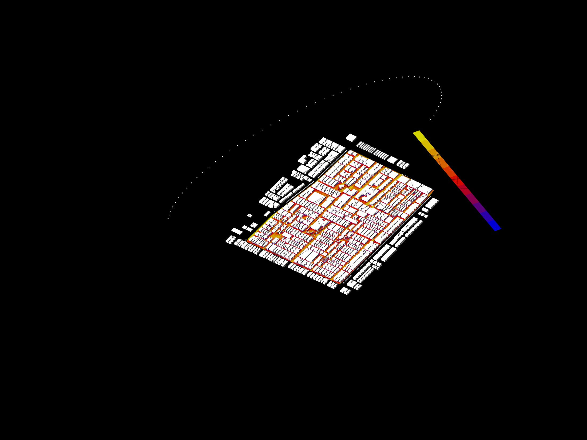

Grasshopper / Ladybug / Microclimate
Urban Comfort Analysis
A parametric environmental study for arid urban open space, translating direct sun-hours, shade patterns, and vegetation effects into design guidance for a more comfortable public realm.

Reading heat exposure through streets, blocks, and tree cover.
This study uses a Grasshopper and Ladybug workflow to evaluate direct solar exposure across a dense urban district within the King Salman Park influence zone.
The analysis focuses on public realm comfort in hot and dry conditions. Streets, hard-surface open spaces, shaded courtyards, and tree-lined walkways are compared through seasonal direct sun-hour simulations, helping identify where design intervention can reduce heat accumulation and improve outdoor use.
Rather than treating simulation as a final graphic output, the project uses environmental data as a design filter: locating exposed corridors, testing the cooling role of vegetation, and translating technical results into practical shading and open-space strategies.
A compact workflow from site reading to spatial recommendations.
Define the study area through satellite mapping, surrounding urban structure, and the public realm network.
Build a simplified massing and open-space model that can be tested parametrically.
Run direct sun-hour studies across summer solstice, autumn equinox, and winter solstice conditions.
Convert exposure patterns into design priorities for shade, planting, and comfortable pedestrian routes.
Selected analysis material.
Processed satellite cover
The satellite image is desaturated and contrast-adjusted to work as a quieter project cover while still showing the relationship between urban fabric, desert edge, roads, and drainage corridors.
Summer exposure and shaded relief
The summer solstice result identifies hard-surface spaces and wide roads with prolonged solar exposure, while tree-lined routes and planted areas show lower direct sun-hours and better comfort potential.

Autumn and winter sun-hour patterns
Comparing equinox and winter conditions helps separate areas that are consistently exposed from spaces where seasonal shading changes the comfort profile.

Ladybug sun-path analysis view
The working model links urban massing, sun path, and colored exposure values, allowing the same framework to test alternative shading or planting strategies.

Environmental analysis becomes a public-space brief.
The study suggests where shade structures, tree canopy, surface material changes, and pedestrian priority routes can have the strongest comfort impact. In this way, microclimate simulation supports a design approach that is spatial, legible, and implementation-oriented rather than purely technical.